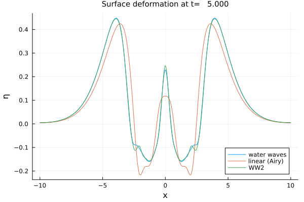
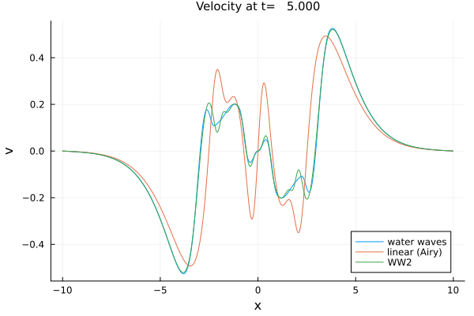
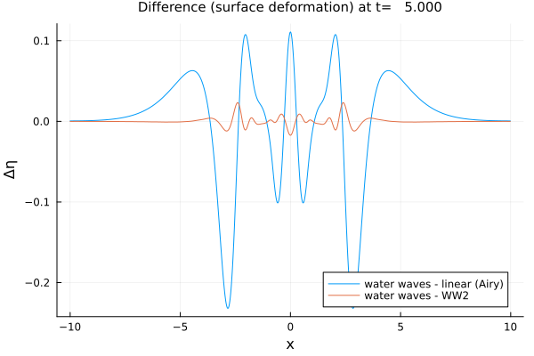
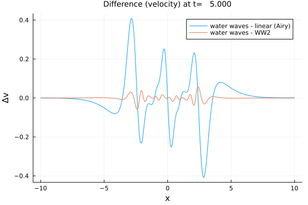
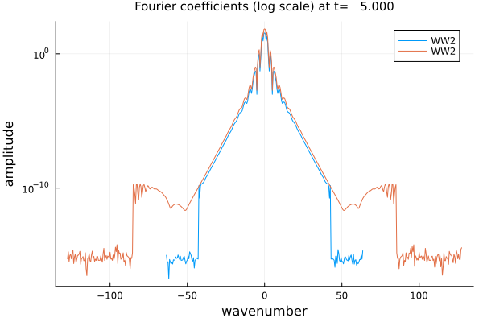
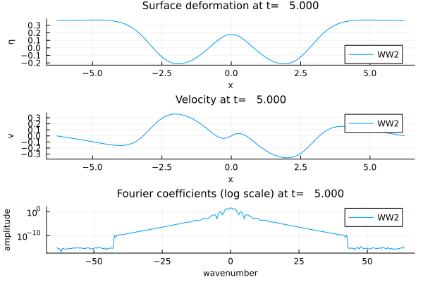
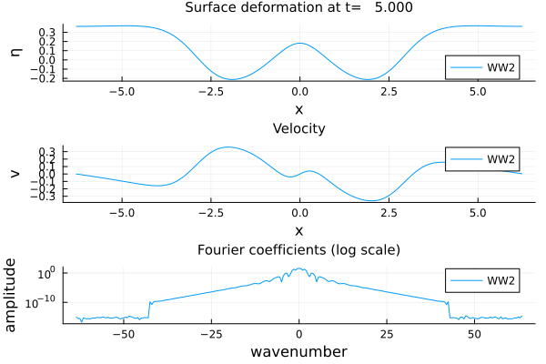
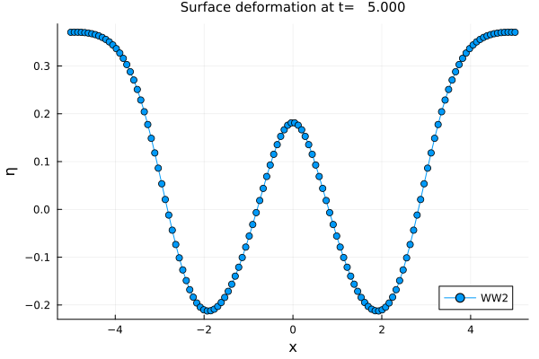
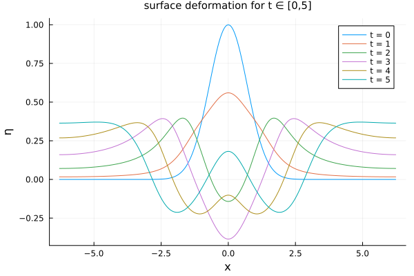
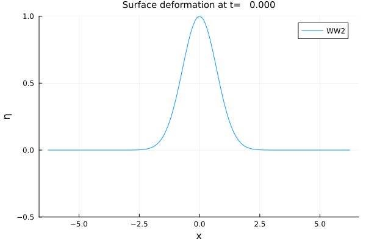

Plot recipes
Some recipes are available to visualize computed problems solution. You need to import the package Plots.jl.
Surface deformation and velocity
using WaterWaves1Dusing Plotsparam = ( μ = 1, ϵ = 1/4, N = 2^10, L = 10, T = 5, dt = 0.01 )z(x) = exp.(-abs.(x).^4)v(x) = zero(x)init = Init(z,v)model0 = WaterWaves(param; tol = 1e-15) # The water waves systemmodel1 = Airy(param) # The linear model (Airy)model2 = WWn(param;n=2,dealias=1,δ=1/10) # The quadratic model (WW2)problem0 = Problem(model0, init, param);problem1 = Problem(model1, init, param);problem2 = Problem(model2, init, param);solve!([problem0 problem1 problem2]; verbose=false);plot(problem0)plot!(problem1)plot!(problem2; var = :surface, legend = :bottomright)
plot([problem0, problem1, problem2]; var = :velocity, legend = :bottomright)
Differences
plot([problem0, problem1], var = :difference)plot!([problem0, problem2], var = :difference)
plot([(problem0, problem1), (problem0, problem2)])plot([(problem0, problem1), (problem0, problem2)], var = :difference_velocity)
Fourier coefficients
using Plotsusing WaterWaves1Dη(x) = exp.(-x.^2)v(x) = zero(x)init = Init(η,v)param1 = ( ϵ = 1/4, μ = Inf, N = 2^8, L = 2*π, T = 5, dt = 0.001 )problem1 = Problem( WWn(param1, dealias = 1), init, param1 )param2 = ( ϵ = 1/4, μ = Inf, N = 2^9, L = 2*π, T = 5, dt = 0.001 )problem2 = Problem( WWn(param2, dealias = 1), init, param2 )solve!([problem1, problem2])plot([problem1, problem2]; T=5, var = :fourier)
Subplots
l = @layout [a ; b; c]p1 = plot(problem1, var = :surface)p2 = plot(problem1, var = :velocity)p3 = plot(problem1, var = :fourier)plot(p1, p2, p3, layout = l, titlefontsize=10, labelfontsize=8)
plot(problem1, var = [:surface,:velocity,:fourier])
Interpolation
x̃ = LinRange(-5, 5, 128)plot(problem2, x = x̃, shape = :circle)
Plots at different times
plot(problem1, T = 0, label = "t = 0")for t in 1:5 plot!(problem1, T = t, label = "t = $t")endtitle!("surface deformation for t ∈ [0,5]")
Create animation
@gif for t in LinRange(0,param1.T,100) plot(problem1, T = t) ylims!(-0.5, 1)end